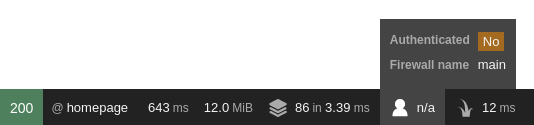

Security ¶
Symfony provides many tools to secure your application. Some HTTP-related security tools, like secure session cookies and CSRF protection are provided by default. The SecurityBundle, which you will learn about in this guide, provides all authentication and authorization features needed to secure your application.
To get started, install the SecurityBundle:
1 |
$ composer require symfony/security-bundle
|
If you have Symfony Flex installed, this also
creates a security.yaml configuration file for you:
1 2 3 4 5 6 7 8 9 10 11 12 13 14 15 16 17 18 19 20 21 22 23 24 25 26 27 |
# config/packages/security.yaml
security:
# https://symfony.com/doc/current/security.html#registering-the-user-hashing-passwords
password_hashers:
Symfony\Component\Security\Core\User\PasswordAuthenticatedUserInterface: 'auto'
# https://symfony.com/doc/current/security.html#where-do-users-come-from-user-providers
providers:
users_in_memory: { memory: null }
firewalls:
dev:
pattern: ^/(_(profiler|wdt)|css|images|js)/
security: false
main:
lazy: true
provider: users_in_memory
# activate different ways to authenticate
# https://symfony.com/doc/current/security.html#firewalls-authentication
# https://symfony.com/doc/current/security/impersonating_user.html
# switch_user: true
# Easy way to control access for large sections of your site
# Note: Only the *first* access control that matches will be used
access_control:
# - { path: ^/admin, roles: ROLE_ADMIN }
# - { path: ^/profile, roles: ROLE_USER }
|
That's a lot of config! In the next sections, the three main elements are discussed:
- The User (
providers) - Any secured section of your application needs some concept of a user. The user provider loads users from any storage (e.g. the database) based on a "user identifier" (e.g. the user's email address);
- The Firewall & Authenticating Users (
firewalls) - The firewall is the core of securing your application. Every request within the firewall is checked if it needs an authenticated user. The firewall also takes care of authenticating this user (e.g. using a login form);
- Access Control (Authorization) (
access_control) - Using access control and the authorization checker, you control the required permissions to perform a specific action or visit a specific URL.
The User ¶
Permissions in Symfony are always linked to a user object. If you need to secure (parts of) your application, you need to create a user class. This is a class that implements UserInterface. This is often a Doctrine entity, but you can also use a dedicated Security user class.
The easiest way to generate a user class is using the make:user command
from the MakerBundle:
1 2 3 4 5 6 7 8 9 10 11 12 13 14 15 16 17 18 19 |
$ php bin/console make:user
The name of the security user class (e.g. User) [User]:
> User
Do you want to store user data in the database (via Doctrine)? (yes/no) [yes]:
> yes
Enter a property name that will be the unique "display" name for the user (e.g. email, username, uuid) [email]:
> email
Will this app need to hash/check user passwords? Choose No if passwords are not needed or will be checked/hashed by some other system (e.g. a single sign-on server).
Does this app need to hash/check user passwords? (yes/no) [yes]:
> yes
created: src/Entity/User.php
created: src/Repository/UserRepository.php
updated: src/Entity/User.php
updated: config/packages/security.yaml
|
1 2 3 4 5 6 7 8 9 10 11 12 13 14 15 16 17 18 19 20 21 22 23 24 25 26 27 28 29 30 31 32 33 34 35 36 37 38 39 40 41 42 43 44 45 46 47 48 49 50 51 52 53 54 55 56 57 58 59 60 61 62 63 64 65 66 67 68 69 70 71 72 73 74 75 76 77 78 79 80 81 82 83 84 85 86 87 88 89 90 91 92 93 94 95 96 97 98 99 100 101 102 103 104 105 106 |
// src/Entity/User.php
namespace App\Entity;
use App\Repository\UserRepository;
use Doctrine\ORM\Mapping as ORM;
use Symfony\Component\Security\Core\User\PasswordAuthenticatedUserInterface;
use Symfony\Component\Security\Core\User\UserInterface;
#[ORM\Entity(repositoryClass: UserRepository::class)]
class User implements UserInterface, PasswordAuthenticatedUserInterface
{
#[ORM\Id]
#[ORM\GeneratedValue]
#[ORM\Column(type: 'integer')]
private $id;
#[ORM\Column(type: 'string', length: 180, unique: true)]
private $email;
#[ORM\Column(type: 'json')]
private $roles = [];
#[ORM\Column(type: 'string')]
private $password;
public function getId(): ?int
{
return $this->id;
}
public function getEmail(): ?string
{
return $this->email;
}
public function setEmail(string $email): self
{
$this->email = $email;
return $this;
}
/**
* The public representation of the user (e.g. a username, an email address, etc.)
*
* @see UserInterface
*/
public function getUserIdentifier(): string
{
return (string) $this->email;
}
/**
* @see UserInterface
*/
public function getRoles(): array
{
$roles = $this->roles;
// guarantee every user at least has ROLE_USER
$roles[] = 'ROLE_USER';
return array_unique($roles);
}
public function setRoles(array $roles): self
{
$this->roles = $roles;
return $this;
}
/**
* @see PasswordAuthenticatedUserInterface
*/
public function getPassword(): string
{
return $this->password;
}
public function setPassword(string $password): self
{
$this->password = $password;
return $this;
}
/**
* Returning a salt is only needed if you are not using a modern
* hashing algorithm (e.g. bcrypt or sodium) in your security.yaml.
*
* @see UserInterface
*/
public function getSalt(): ?string
{
return null;
}
/**
* @see UserInterface
*/
public function eraseCredentials()
{
// If you store any temporary, sensitive data on the user, clear it here
// $this->plainPassword = null;
}
}
|
If your user is a Doctrine entity, like in the example above, don't forget to create the tables by creating and running a migration:
1 2 |
$ php bin/console make:migration
$ php bin/console doctrine:migrations:migrate
|
Loading the User: The User Provider ¶
Besides creating the entity, the make:user command also adds config
for a user provider in your security configuration:
1 2 3 4 5 6 7 8 9 |
# config/packages/security.yaml
security:
# ...
providers:
app_user_provider:
entity:
class: App\Entity\User
property: email
|
This user provider knows how to (re)load users from a storage (e.g. a database)
based on a "user identifier" (e.g. the user's email address or username).
The configuration above uses Doctrine to load the User entity using the
email property as "user identifier".
User providers are used in a couple places during the security lifecycle:
- Load the User based on an identifier
- During login (or any other authenticator), the provider loads the user based on the user identifier. Some other features, like user impersonation and Remember Me also use this.
- Reload the User from the session
-
At the beginning of each request, the user is loaded from the
session (unless your firewall is
stateless). The provider "refreshes" the user (e.g. the database is queried again for fresh data) to make sure all user information is up to date (and if necessary, the user is de-authenticated/logged out if something changed). See Security for more information about this process.
Symfony comes with several built-in user providers:
- Entity User Provider
- Loads users from a database using Doctrine;
- LDAP User Provider
- Loads users from a LDAP server;
- Memory User Provider
- Loads users from a configuration file;
- Chain User Provider
- Merges two or more user providers into a new user provider. Since each firewall has exactly one user provider, you can use this to chain multiple providers together.
The built-in user providers cover the most common needs for applications, but you can also create your own custom user provider.
Note
Sometimes, you need to inject the user provider in another class (e.g.
in your custom authenticator). All user providers follow this pattern
for their service ID: security.user.provider.concrete.<your-provider-name>
(where <your-provider-name> is the configuration key, e.g.
app_user_provider). If you only have one user provider, you can autowire
it using the UserProviderInterface
type-hint.
Registering the User: Hashing Passwords ¶
Many applications require a user to log in with a password. For these applications, the SecurityBundle provides password hashing and verification functionality.
First, make sure your User class implements the PasswordAuthenticatedUserInterface:
1 2 3 4 5 6 7 8 9 10 11 12 13 14 15 16 17 |
// src/Entity/User.php
// ...
use Symfony\Component\Security\Core\User\PasswordAuthenticatedUserInterface;
class User implements UserInterface, PasswordAuthenticatedUserInterface
{
// ...
/**
* @return string the hashed password for this user
*/
public function getPassword(): string
{
return $this->password;
}
}
|
Then, configure which password hasher should be used for this class. If your
security.yaml file wasn't already pre-configured, then make:user should
have done this for you:
1 2 3 4 5 6 7 |
# config/packages/security.yaml
security:
# ...
password_hashers:
# Use native password hasher, which auto-selects and migrates the best
# possible hashing algorithm (which currently is "bcrypt")
Symfony\Component\Security\Core\User\PasswordAuthenticatedUserInterface: 'auto'
|
Now that Symfony knows how you want to hash the passwords, you can use the
UserPasswordHasherInterface service to do this before saving your users to
the database:
1 2 3 4 5 6 7 8 9 10 11 12 13 14 15 16 17 18 19 20 21 22 23 24 |
// src/Controller/RegistrationController.php
namespace App\Controller;
// ...
use Symfony\Component\PasswordHasher\Hasher\UserPasswordHasherInterface;
class RegistrationController extends AbstractController
{
public function index(UserPasswordHasherInterface $passwordHasher)
{
// ... e.g. get the user data from a registration form
$user = new User(...);
$plaintextPassword = ...;
// hash the password (based on the security.yaml config for the $user class)
$hashedPassword = $passwordHasher->hashPassword(
$user,
$plaintextPassword
);
$user->setPassword($hashedPassword);
// ...
}
}
|
Tip
The make:registration-form maker command can help you set-up the
registration controller and add features like email address
verification using the SymfonyCastsVerifyEmailBundle.
1 2 |
$ composer require symfonycasts/verify-email-bundle
$ php bin/console make:registration-form
|
You can also manually hash a password by running:
1 |
$ php bin/console security:hash-password
|
Read more about all available hashers and password migration in Password Hashing and Verification.
6.2
In applications using Symfony 6.2 and PHP 8.2 or newer, the SensitiveParameter PHP attribute is applied to all plain passwords and sensitive tokens so they don't appear in stack traces.
The Firewall ¶
The firewalls section of config/packages/security.yaml is the most
important section. A "firewall" is your authentication system: the firewall
defines which parts of your application are secured and how your users
will be able to authenticate (e.g. login form, API token, etc).
1 2 3 4 5 6 7 8 9 10 11 12 13 14 15 16 17 |
# config/packages/security.yaml
security:
# ...
firewalls:
dev:
pattern: ^/(_(profiler|wdt)|css|images|js)/
security: false
main:
lazy: true
# provider that you set earlier inside providers
provider: app_user_provider
# activate different ways to authenticate
# https://symfony.com/doc/current/security.html#firewalls-authentication
# https://symfony.com/doc/current/security/impersonating_user.html
# switch_user: true
|
Only one firewall is active on each request: Symfony uses the pattern key
to find the first match (you can also
match by host or other things).
The dev firewall is really a fake firewall: it makes sure that you
don't accidentally block Symfony's dev tools - which live under URLs like
/_profiler and /_wdt.
All real URLs are handled by the main firewall (no pattern key means
it matches all URLs). A firewall can have many modes of authentication,
in other words, it enables many ways to ask the question "Who are you?".
Often, the user is unknown (i.e. not logged in) when they first visit your website. If you visit your homepage right now, you will have access and you'll see that you're visiting a page behind the firewall in the toolbar:
Visiting a URL under a firewall doesn't necessarily require you to be authenticated (e.g. the login form has to be accessible or some parts of your application are public). You'll learn how to restrict access to URLs, controllers or anything else within your firewall in the access control section.
Tip
The lazy anonymous mode prevents the session from being started if
there is no need for authorization (i.e. explicit check for a user
privilege). This is important to keep requests cacheable (see
HTTP Cache).
Note
If you do not see the toolbar, install the profiler with:
1 |
$ composer require --dev symfony/profiler-pack
|
Fetching the Firewall Configuration for a Request ¶
If you need to get the configuration of the firewall that matched a given request, use the Security service:
1 2 3 4 5 6 7 8 9 10 11 12 13 14 15 16 17 18 19 20 21 22 23 24 |
// src/Service/ExampleService.php
// ...
use Symfony\Bundle\SecurityBundle\Security;
use Symfony\Component\HttpFoundation\RequestStack;
class ExampleService
{
public function __construct(
// Avoid calling getFirewallConfig() in the constructor: auth may not
// be complete yet. Instead, store the entire Security object.
private Security $security,
RequestStack $requestStack,
) {
}
public function someMethod()
{
$request = $this->requestStack->getCurrentRequest();
$firewallName = $this->security->getFirewallConfig($request)?->getName();
// ...
}
}
|
6.2
The getFirewallConfig() method was introduced in Symfony 6.2.
Authenticating Users ¶
During authentication, the system tries to find a matching user for the visitor of the webpage. Traditionally, this was done using a login form or a HTTP basic dialog in the browser. However, the SecurityBundle comes with many other authenticators:
- Form Login
- JSON Login
- HTTP Basic
- Login Link
- X.509 Client Certificates
- Remote users
- Custom Authenticators
Tip
If your application logs users in via a third-party service such as Google, Facebook or Twitter (social login), check out the HWIOAuthBundle community bundle.
Form Login ¶
Most websites have a login form where users authenticate using an identifier (e.g. email address or username) and a password. This functionality is provided by the form login authenticator.
First, create a controller for the login form:
1 2 3 4 |
$ php bin/console make:controller Login
created: src/Controller/LoginController.php
created: templates/login/index.html.twig
|
1 2 3 4 5 6 7 8 9 10 11 12 13 14 15 16 17 |
// src/Controller/LoginController.php
namespace App\Controller;
use Symfony\Bundle\FrameworkBundle\Controller\AbstractController;
use Symfony\Component\HttpFoundation\Response;
use Symfony\Component\Routing\Annotation\Route;
class LoginController extends AbstractController
{
#[Route('/login', name: 'app_login')]
public function index(): Response
{
return $this->render('login/index.html.twig', [
'controller_name' => 'LoginController',
]);
}
}
|
Then, enable the form login authenticator using the form_login setting:
1 2 3 4 5 6 7 8 9 10 11 |
# config/packages/security.yaml
security:
# ...
firewalls:
main:
# ...
form_login:
# "app_login" is the name of the route created previously
login_path: app_login
check_path: app_login
|
Note
The login_path and check_path support URLs and route names (but
cannot have mandatory wildcards - e.g. /login/{foo} where foo
has no default value).
Once enabled, the security system redirects unauthenticated visitors to the
login_path when they try to access a secured place (this behavior can
be customized using authentication entry points).
Edit the login controller to render the login form:
1 2 3 4 5 6 7 8 9 10 11 12 13 14 15 16 17 18 19 20 21 22 |
// ...
+ use Symfony\Component\Security\Http\Authentication\AuthenticationUtils;
class LoginController extends AbstractController
{
#[Route('/login', name: 'app_login')]
- public function index(): Response
+ public function index(AuthenticationUtils $authenticationUtils): Response
{
+ // get the login error if there is one
+ $error = $authenticationUtils->getLastAuthenticationError();
+
+ // last username entered by the user
+ $lastUsername = $authenticationUtils->getLastUsername();
+
return $this->render('login/index.html.twig', [
- 'controller_name' => 'LoginController',
+ 'last_username' => $lastUsername,
+ 'error' => $error,
]);
}
}
|
Don't let this controller confuse you. Its job is only to render the form:
the form_login authenticator will handle the form submission automatically.
If the user submits an invalid email or password, that authenticator will store
the error and redirect back to this controller, where we read the error (using
AuthenticationUtils) so that it can be displayed back to the user.
Finally, create or update the template:
1 2 3 4 5 6 7 8 9 10 11 12 13 14 15 16 17 18 19 20 21 22 23 |
{# templates/login/index.html.twig #}
{% extends 'base.html.twig' %}
{# ... #}
{% block body %}
{% if error %}
<div>{{ error.messageKey|trans(error.messageData, 'security') }}</div>
{% endif %}
<form action="{{ path('app_login') }}" method="post">
<label for="username">Email:</label>
<input type="text" id="username" name="_username" value="{{ last_username }}">
<label for="password">Password:</label>
<input type="password" id="password" name="_password">
{# If you want to control the URL the user is redirected to on success
<input type="hidden" name="_target_path" value="/account"> #}
<button type="submit">login</button>
</form>
{% endblock %}
|
Caution
The error variable passed into the template is an instance
of AuthenticationException.
It may contain sensitive information about the authentication failure.
Never use error.message: use the messageKey property instead,
as shown in the example. This message is always safe to display.
The form can look like anything, but it usually follows some conventions:
- The
<form>element sends aPOSTrequest to theapp_loginroute, since that's what you configured as thecheck_pathunder theform_loginkey insecurity.yaml; - The username (or whatever your user's "identifier" is, like an email) field has
the name
_usernameand the password field has the name_password.
Tip
Actually, all of this can be configured under the form_login key. See
Security Configuration Reference (SecurityBundle) for more details.
Caution
This login form is currently not protected against CSRF attacks. Read Security on how to protect your login form.
And that's it! When you submit the form, the security system automatically
reads the _username and _password POST parameter, loads the user via
the user provider, checks the user's credentials and either authenticates the
user or sends them back to the login form where the error can be displayed.
To review the whole process:
- The user tries to access a resource that is protected (e.g.
/admin); - The firewall initiates the authentication process by redirecting the
user to the login form (
/login); - The
/loginpage renders login form via the route and controller created in this example; - The user submits the login form to
/login; - The security system (i.e. the
form_loginauthenticator) intercepts the request, checks the user's submitted credentials, authenticates the user if they are correct, and sends the user back to the login form if they are not.
See also
You can customize the responses on a successful or failed login attempt. See Customizing the Form Login Authenticator Responses.
CSRF Protection in Login Forms ¶
Login CSRF attacks can be prevented using the same technique of adding hidden CSRF tokens into the login forms. The Security component already provides CSRF protection, but you need to configure some options before using it.
First, you need to enable CSRF on the form login:
1 2 3 4 5 6 7 8 9 10 |
# config/packages/security.yaml
security:
# ...
firewalls:
secured_area:
# ...
form_login:
# ...
enable_csrf: true
|
Then, use the csrf_token() function in the Twig template to generate a CSRF
token and store it as a hidden field of the form. By default, the HTML field
must be called _csrf_token and the string used to generate the value must
be authenticate:
1 2 3 4 5 6 7 8 9 10 |
{# templates/login/index.html.twig #}
{# ... #}
<form action="{{ path('app_login') }}" method="post">
{# ... the login fields #}
<input type="hidden" name="_csrf_token" value="{{ csrf_token('authenticate') }}">
<button type="submit">login</button>
</form>
|
After this, you have protected your login form against CSRF attacks.
Tip
You can change the name of the field by setting csrf_parameter and change
the token ID by setting csrf_token_id in your configuration. See
Security Configuration Reference (SecurityBundle) for more details.
JSON Login ¶
Some applications provide an API that is secured using tokens. These applications may use an endpoint that provides these tokens based on a username (or email) and password. The JSON login authenticator helps you create this functionality.
Enable the authenticator using the json_login setting:
1 2 3 4 5 6 7 8 9 10 |
# config/packages/security.yaml
security:
# ...
firewalls:
main:
# ...
json_login:
# api_login is a route we will create below
check_path: api_login
|
Note
The check_path supports URLs and route names (but cannot have
mandatory wildcards - e.g. /login/{foo} where foo has no
default value).
The authenticator runs when a client requests the check_path. First,
create a controller for this path:
1 2 3 |
$ php bin/console make:controller --no-template ApiLogin
created: src/Controller/ApiLoginController.php
|
1 2 3 4 5 6 7 8 9 10 11 12 13 14 15 16 17 18 |
// src/Controller/ApiLoginController.php
namespace App\Controller;
use Symfony\Bundle\FrameworkBundle\Controller\AbstractController;
use Symfony\Component\HttpFoundation\Response;
use Symfony\Component\Routing\Annotation\Route;
class ApiLoginController extends AbstractController
{
#[Route('/api/login', name: 'api_login')]
public function index(): Response
{
return $this->json([
'message' => 'Welcome to your new controller!',
'path' => 'src/Controller/ApiLoginController.php',
]);
}
}
|
This login controller will be called after the authenticator successfully authenticates the user. You can get the authenticated user, generate a token (or whatever you need to return) and return the JSON response:
1 2 3 4 5 6 7 8 9 10 11 12 13 14 15 16 17 18 19 20 21 22 23 24 25 26 |
// ...
+ use App\Entity\User;
+ use Symfony\Component\Security\Http\Attribute\CurrentUser;
class ApiLoginController extends AbstractController
{
#[Route('/api/login', name: 'api_login')]
- public function index(): Response
+ public function index(#[CurrentUser] ?User $user): Response
{
+ if (null === $user) {
+ return $this->json([
+ 'message' => 'missing credentials',
+ ], Response::HTTP_UNAUTHORIZED);
+ }
+
+ $token = ...; // somehow create an API token for $user
+
return $this->json([
- 'message' => 'Welcome to your new controller!',
- 'path' => 'src/Controller/ApiLoginController.php',
+ 'user' => $user->getUserIdentifier(),
+ 'token' => $token,
]);
}
}
|
Note
The #[CurrentUser] can only be used in controller arguments to
retrieve the authenticated user. In services, you would use
getUser().
That's it! To summarize the process:
A client (e.g. the front-end) makes a POST request with the
Content-Type: application/jsonheader to/api/loginwithusername(even if your identifier is actually an email) andpasswordkeys:1 2 3 4
{ "username": "dunglas@example.com", "password": "MyPassword" }- The security system intercepts the request, checks the user's submitted credentials and authenticates the user. If the credentials are incorrect, an HTTP 401 Unauthorized JSON response is returned, otherwise your controller is run;
Your controller creates the correct response:
1 2 3 4
{ "user": "dunglas@example.com", "token": "45be42..." }
Tip
The JSON request format can be configured under the json_login key.
See Security Configuration Reference (SecurityBundle) for more details.
HTTP Basic ¶
HTTP Basic authentication is a standardized HTTP authentication framework. It asks credentials (username and password) using a dialog in the browser and the HTTP basic authenticator of Symfony will verify these credentials.
Add the http_basic key to your firewall to enable HTTP Basic
authentication:
1 2 3 4 5 6 7 8 9 |
# config/packages/security.yaml
security:
# ...
firewalls:
main:
# ...
http_basic:
realm: Secured Area
|
That's it! Whenever an unauthenticated user tries to visit a protected
page, Symfony will inform the browser that it needs to start HTTP basic
authentication (using the WWW-Authenticate response header). Then, the
authenticator verifies the credentials and authenticates the user.
Note
You cannot use log out with the HTTP basic authenticator. Even if you log out from Symfony, your browser "remembers" your credentials and will send them on every request.
Login Link ¶
Login links are a passwordless authentication mechanism. The user will receive a short-lived link (e.g. via email) which will authenticate them to the website.
You can learn all about this authenticator in How to use Passwordless Login Link Authentication.
Access Tokens ¶
Access Tokens are often used in API contexts. The user receives a token from an authorization server which authenticates them.
You can learn all about this authenticator in How to use Access Token Authentication.
X.509 Client Certificates ¶
When using client certificates, your web server does all the authentication itself. The X.509 authenticator provided by Symfony extracts the email from the "distinguished name" (DN) of the client certificate. Then, it uses this email as user identifier in the user provider.
First, configure your web server to enable client certificate verification and to expose the certificate's DN to the Symfony application:
1 2 3 4 5 6 7 8 9 10 11 12 13 14 15 16 |
server {
# ...
ssl_client_certificate /path/to/my-custom-CA.pem;
# enable client certificate verification
ssl_verify_client optional;
ssl_verify_depth 1;
location / {
# pass the DN as "SSL_CLIENT_S_DN" to the application
fastcgi_param SSL_CLIENT_S_DN $ssl_client_s_dn;
# ...
}
}
|
Then, enable the X.509 authenticator using x509 on your firewall:
1 2 3 4 5 6 7 8 9 |
# config/packages/security.yaml
security:
# ...
firewalls:
main:
# ...
x509:
provider: your_user_provider
|
By default, Symfony extracts the email address from the DN in two different ways:
- First, it tries the
SSL_CLIENT_S_DN_Emailserver parameter, which is exposed by Apache; - If it is not set (e.g. when using Nginx), it uses
SSL_CLIENT_S_DNand matches the value followingemailAddress.
You can customize the name of some parameters under the x509 key.
See the x509 configuration reference
for more details.
Remote Users ¶
Besides client certificate authentication, there are more web server modules that pre-authenticate a user (e.g. kerberos). The remote user authenticator provides a basic integration for these services.
These modules often expose the authenticated user in the REMOTE_USER
environment variable. The remote user authenticator uses this value as the
user identifier to load the corresponding user.
Enable remote user authentication using the remote_user key:
1 2 3 4 5 6 7 |
# config/packages/security.yaml
security:
firewalls:
main:
# ...
remote_user:
provider: your_user_provider
|
Tip
You can customize the name of this server variable under the
remote_user key. See
the configuration reference
for more details.
Limiting Login Attempts ¶
Symfony provides basic protection against brute force login attacks.
You must enable this using the login_throttling setting:
1 2 3 4 5 6 7 8 9 10 11 12 13 14 15 16 17 18 19 20 |
# config/packages/security.yaml
security:
firewalls:
# ...
main:
# ...
# by default, the feature allows 5 login attempts per minute
login_throttling: null
# configure the maximum login attempts
login_throttling:
max_attempts: 3 # per minute ...
# interval: '15 minutes' # ... or in a custom period
# use a custom rate limiter via its service ID
login_throttling:
limiter: app.my_login_rate_limiter
|
Note
The value of the interval option must be a number followed by any of the
units accepted by the PHP date relative formats (e.g. 3 seconds,
10 hours, 1 day, etc.)
Internally, Symfony uses the Rate Limiter component which by default uses Symfony's cache to store the previous login attempts. However, you can implement a custom storage.
Login attempts are limited on max_attempts (default: 5)
failed requests for IP address + username and 5 * max_attempts
failed requests for IP address. The second limit protects against an
attacker using multiple usernames from bypassing the first limit, without
disrupting normal users on big networks (such as offices).
Tip
Limiting the failed login attempts is only one basic protection against brute force attacks. The OWASP Brute Force Attacks guidelines mention several other protections that you should consider depending on the level of protection required.
If you need a more complex limiting algorithm, create a class that implements
RequestRateLimiterInterface
(or use
DefaultLoginRateLimiter)
and set the limiter option to its service ID:
1 2 3 4 5 6 7 8 9 10 11 12 13 14 15 16 17 18 19 20 21 22 23 24 25 26 27 28 29 30 |
# config/packages/security.yaml
framework:
rate_limiter:
# define 2 rate limiters (one for username+IP, the other for IP)
username_ip_login:
policy: token_bucket
limit: 5
rate: { interval: '5 minutes' }
ip_login:
policy: sliding_window
limit: 50
interval: '15 minutes'
services:
# our custom login rate limiter
app.login_rate_limiter:
class: Symfony\Component\Security\Http\RateLimiter\DefaultLoginRateLimiter
arguments:
# globalFactory is the limiter for IP
$globalFactory: '@limiter.ip_login'
# localFactory is the limiter for username+IP
$localFactory: '@limiter.username_ip_login'
security:
firewalls:
main:
# use a custom rate limiter via its service ID
login_throttling:
limiter: app.login_rate_limiter
|
Login Programmatically ¶
6.2
The Symfony\Bundle\SecurityBundle\Security
class was introduced in Symfony 6.2. Prior to 6.2, it was called
Symfony.
6.2
The login() method was introduced in Symfony 6.2.
You can log in a user programmatically using the login() method of the
Security helper:
1 2 3 4 5 6 7 8 9 10 11 12 13 14 15 16 17 18 19 20 21 22 23 24 25 26 27 28 29 30 31 32 33 |
// src/Controller/SecurityController.php
namespace App\Controller\SecurityController;
use App\Security\Authenticator\ExampleAuthenticator;
use Symfony\Bundle\SecurityBundle\Security;
class SecurityController
{
public function someAction(Security $security): Response
{
// get the user to be authenticated
$user = ...;
// log the user in on the current firewall
$security->login($user);
// if the firewall has more than one authenticator, you must pass it explicitly
// by using the name of built-in authenticators...
$security->login($user, 'form_login');
// ...or the service id of custom authenticators
$security->login($user, ExampleAuthenticator::class);
// you can also log in on a different firewall
$security->login($user, 'form_login', 'other_firewall');
// use the redirection logic applied to regular login
$redirectResponse = $security->login($user);
return $redirectResponse;
// or use a custom redirection logic (e.g. redirect users to their account page)
// return new RedirectResponse('...');
}
}
|
6.3
The feature to use a custom redirection logic was introduced in Symfony 6.3.
Logging Out ¶
To enable logging out, activate the logout config parameter under your firewall:
1 2 3 4 5 6 7 8 9 10 11 12 |
# config/packages/security.yaml
security:
# ...
firewalls:
main:
# ...
logout:
path: app_logout
# where to redirect after logout
# target: app_any_route
|
Next, you need to create a route for this URL (but not a controller):
1 2 3 4 5 6 7 8 9 10 11 12 13 14 15 |
// src/Controller/SecurityController.php
namespace App\Controller;
use Symfony\Bundle\FrameworkBundle\Controller\AbstractController;
use Symfony\Component\Routing\Annotation\Route;
class SecurityController extends AbstractController
{
#[Route('/logout', name: 'app_logout', methods: ['GET'])]
public function logout()
{
// controller can be blank: it will never be called!
throw new \Exception('Don\'t forget to activate logout in security.yaml');
}
}
|
That's it! By sending a user to the app_logout route (i.e. to /logout)
Symfony will un-authenticate the current user and redirect them.
Logout programmatically ¶
6.2
The Symfony\Bundle\SecurityBundle\Security
class was introduced in Symfony 6.2. Prior to 6.2, it was called
Symfony.
6.2
The logout() method was introduced in Symfony 6.2.
You can logout user programmatically using the logout() method of the
Security helper:
1 2 3 4 5 6 7 8 9 10 11 12 13 14 15 16 17 18 |
// src/Controller/SecurityController.php
namespace App\Controller\SecurityController;
use Symfony\Bundle\SecurityBundle\Security;
class SecurityController
{
public function someAction(Security $security): Response
{
// logout the user in on the current firewall
$response = $security->logout();
// you can also disable the csrf logout
$response = $security->logout(false);
// ... return $response (if set) or e.g. redirect to the homepage
}
}
|
The user will be logout from the firewall of the request. If the request is
not behind a firewall a \LogicException will be thrown.
Customizing Logout ¶
In some cases you need to run extra logic upon logout (e.g. invalidate some tokens) or want to customize what happens after a logout. During logout, a LogoutEvent is dispatched. Register an event listener or subscriber to execute custom logic:
1 2 3 4 5 6 7 8 9 10 11 12 13 14 15 16 17 18 19 20 21 22 23 24 25 26 27 28 29 30 31 32 33 34 35 36 37 38 39 |
// src/EventListener/LogoutSubscriber.php
namespace App\EventListener;
use Symfony\Component\EventDispatcher\EventSubscriberInterface;
use Symfony\Component\HttpFoundation\RedirectResponse;
use Symfony\Component\Routing\Generator\UrlGeneratorInterface;
use Symfony\Component\Security\Http\Event\LogoutEvent;
class LogoutSubscriber implements EventSubscriberInterface
{
public function __construct(
private UrlGeneratorInterface $urlGenerator
) {
}
public static function getSubscribedEvents(): array
{
return [LogoutEvent::class => 'onLogout'];
}
public function onLogout(LogoutEvent $event): void
{
// get the security token of the session that is about to be logged out
$token = $event->getToken();
// get the current request
$request = $event->getRequest();
// get the current response, if it is already set by another listener
$response = $event->getResponse();
// configure a custom logout response to the homepage
$response = new RedirectResponse(
$this->urlGenerator->generate('homepage'),
RedirectResponse::HTTP_SEE_OTHER
);
$event->setResponse($response);
}
}
|
Fetching the User Object ¶
After authentication, the User object of the current user can be
accessed via the getUser() shortcut in the
base controller:
1 2 3 4 5 6 7 8 9 10 11 12 13 14 15 16 17 18 19 20 |
use Symfony\Bundle\FrameworkBundle\Controller\AbstractController;
class ProfileController extends AbstractController
{
public function index(): Response
{
// usually you'll want to make sure the user is authenticated first,
// see "Authorization" below
$this->denyAccessUnlessGranted('IS_AUTHENTICATED_FULLY');
// returns your User object, or null if the user is not authenticated
// use inline documentation to tell your editor your exact User class
/** @var \App\Entity\User $user */
$user = $this->getUser();
// Call whatever methods you've added to your User class
// For example, if you added a getFirstName() method, you can use that.
return new Response('Well hi there '.$user->getFirstName());
}
}
|
Fetching the User from a Service ¶
If you need to get the logged in user from a service, use the Security service:
1 2 3 4 5 6 7 8 9 10 11 12 13 14 15 16 17 18 19 20 21 22 |
// src/Service/ExampleService.php
// ...
use Symfony\Bundle\SecurityBundle\Security;
class ExampleService
{
// Avoid calling getUser() in the constructor: auth may not
// be complete yet. Instead, store the entire Security object.
public function __construct(
private Security $security,
){
}
public function someMethod()
{
// returns User object or null if not authenticated
$user = $this->security->getUser();
// ...
}
}
|
6.2
The Security class
was introduced in Symfony 6.2. In previous Symfony versions this class was
defined in Symfony.
Fetch the User in a Template ¶
In a Twig Template the user object is available via the app.user variable
thanks to the Twig global app variable:
1 2 3 |
{% if is_granted('IS_AUTHENTICATED_FULLY') %}
<p>Email: {{ app.user.email }}</p>
{% endif %}
|
Access Control (Authorization) ¶
Users can now log in to your app using your login form. Great! Now, you need to learn how to deny access and work with the User object. This is called authorization, and its job is to decide if a user can access some resource (a URL, a model object, a method call, ...).
The process of authorization has two different sides:
- The user receives a specific role when logging in (e.g.
ROLE_ADMIN). - You add code so that a resource (e.g. URL, controller) requires a specific
"attribute" (e.g. a role like
ROLE_ADMIN) in order to be accessed.
Roles ¶
When a user logs in, Symfony calls the getRoles() method on your User
object to determine which roles this user has. In the User class that
was generated earlier, the roles are an array that's stored in the
database and every user is always given at least one role: ROLE_USER:
1 2 3 4 5 6 7 8 9 10 11 12 13 14 15 16 17 18 |
// src/Entity/User.php
// ...
class User
{
#[ORM\Column(type: 'json')]
private $roles = [];
// ...
public function getRoles(): array
{
$roles = $this->roles;
// guarantee every user at least has ROLE_USER
$roles[] = 'ROLE_USER';
return array_unique($roles);
}
}
|
This is a nice default, but you can do whatever you want to determine which roles
a user should have. The only rule is that every role must start with the
ROLE_ prefix - otherwise, things won't work as expected. Other than that,
a role is just a string and you can invent whatever you need (e.g. ROLE_PRODUCT_ADMIN).
You'll use these roles next to grant access to specific sections of your site.
Hierarchical Roles ¶
Instead of giving many roles to each user, you can define role inheritance rules by creating a role hierarchy:
1 2 3 4 5 6 7 |
# config/packages/security.yaml
security:
# ...
role_hierarchy:
ROLE_ADMIN: ROLE_USER
ROLE_SUPER_ADMIN: [ROLE_ADMIN, ROLE_ALLOWED_TO_SWITCH]
|
Users with the ROLE_ADMIN role will also have the ROLE_USER role.
Users with ROLE_SUPER_ADMIN, will automatically have ROLE_ADMIN,
ROLE_ALLOWED_TO_SWITCH and ROLE_USER (inherited from
ROLE_ADMIN).
Caution
For role hierarchy to work, do not use $user->getRoles() manually.
For example, in a controller extending from the base controller:
1 2 3 4 5 6 |
// BAD - $user->getRoles() will not know about the role hierarchy
$hasAccess = in_array('ROLE_ADMIN', $user->getRoles());
// GOOD - use of the normal security methods
$hasAccess = $this->isGranted('ROLE_ADMIN');
$this->denyAccessUnlessGranted('ROLE_ADMIN');
|
Note
The role_hierarchy values are static - you can't, for example, store the
role hierarchy in a database. If you need that, create a custom
security voter that looks for the user roles
in the database.
Add Code to Deny Access ¶
There are two ways to deny access to something:
- access_control in security.yaml
allows you to protect URL patterns (e.g.
/admin/*). Simpler, but less flexible; - in your controller (or other code).
Securing URL patterns (access_control) ¶
The most basic way to secure part of your app is to secure an entire URL pattern
in security.yaml. For example, to require ROLE_ADMIN for all URLs that
start with /admin, you can:
1 2 3 4 5 6 7 8 9 10 11 12 13 14 15 16 17 18 19 |
# config/packages/security.yaml
security:
# ...
firewalls:
# ...
main:
# ...
access_control:
# require ROLE_ADMIN for /admin*
- { path: '^/admin', roles: ROLE_ADMIN }
# or require ROLE_ADMIN or IS_AUTHENTICATED_FULLY for /admin*
- { path: '^/admin', roles: [IS_AUTHENTICATED_FULLY, ROLE_ADMIN] }
# the 'path' value can be any valid regular expression
# (this one will match URLs like /api/post/7298 and /api/comment/528491)
- { path: ^/api/(post|comment)/\d+$, roles: ROLE_USER }
|
You can define as many URL patterns as you need - each is a regular expression. BUT, only one will be matched per request: Symfony starts at the top of the list and stops when it finds the first match:
1 2 3 4 5 6 7 8 9 10 |
# config/packages/security.yaml
security:
# ...
access_control:
# matches /admin/users/*
- { path: '^/admin/users', roles: ROLE_SUPER_ADMIN }
# matches /admin/* except for anything matching the above rule
- { path: '^/admin', roles: ROLE_ADMIN }
|
Prepending the path with ^ means that only URLs beginning with the
pattern are matched. For example, a path of /admin (without the ^)
would match /admin/foo but would also match URLs like /foo/admin.
Each access_control can also match on IP address, hostname and HTTP methods.
It can also be used to redirect a user to the https version of a URL pattern.
For more complex needs, you can also use a service implementing RequestMatcherInterface.
Securing Controllers and other Code ¶
You can deny access from inside a controller:
1 2 3 4 5 6 7 8 9 10 |
// src/Controller/AdminController.php
// ...
public function adminDashboard(): Response
{
$this->denyAccessUnlessGranted('ROLE_ADMIN');
// or add an optional message - seen by developers
$this->denyAccessUnlessGranted('ROLE_ADMIN', null, 'User tried to access a page without having ROLE_ADMIN');
}
|
That's it! If access is not granted, a special AccessDeniedException is thrown and no more code in your controller is called. Then, one of two things will happen:
- If the user isn't logged in yet, they will be asked to log in (e.g. redirected to the login page).
- If the user is logged in, but does not have the
ROLE_ADMINrole, they'll be shown the 403 access denied page (which you can customize).
Another way to secure one or more controller actions is to use an attribute.
In the following example, all controller actions will require the
ROLE_ADMIN permission, except for adminDashboard(), which will require
the ROLE_SUPER_ADMIN permission:
1 2 3 4 5 6 7 8 9 10 11 12 13 14 15 |
// src/Controller/AdminController.php
// ...
use Symfony\Component\Security\Http\Attribute\IsGranted;
#[IsGranted('ROLE_ADMIN')]
class AdminController extends AbstractController
{
// Optionally, you can set a custom message that will be displayed to the user
#[IsGranted('ROLE_SUPER_ADMIN', message: 'You are not allowed to access the admin dashboard.')]
public function adminDashboard(): Response
{
// ...
}
}
|
If you want to use a custom status code instead of the default one (which
is 403), this can be done by setting with the statusCode argument:
1 2 3 4 5 6 7 8 9 10 |
// src/Controller/AdminController.php
// ...
use Symfony\Component\Security\Http\Attribute\IsGranted;
#[IsGranted('ROLE_ADMIN', statusCode: 423)]
class AdminController extends AbstractController
{
// ...
}
|
You can also set the internal exception code of the
AccessDeniedException
that is thrown with the exceptionCode argument:
1 2 3 4 5 6 7 8 9 10 |
// src/Controller/AdminController.php
// ...
use Symfony\Component\Security\Http\Attribute\IsGranted;
#[IsGranted('ROLE_ADMIN', statusCode: 403, exceptionCode: 10010)]
class AdminController extends AbstractController
{
// ...
}
|
6.2
The #[IsGranted()] attribute was introduced in Symfony 6.2.
6.3
The exceptionCode argument of the #[IsGranted()] attribute was
introduced in Symfony 6.3.
Access Control in Templates ¶
If you want to check if the current user has a certain role, you can use
the built-in is_granted() helper function in any Twig template:
1 2 3 |
{% if is_granted('ROLE_ADMIN') %}
<a href="...">Delete</a>
{% endif %}
|
Securing other Services ¶
You can check access anywhere in your code by injecting the Security
service. For example, suppose you have a SalesReportManager service and you
want to include extra details only for users that have a ROLE_SALES_ADMIN role:
1 2 3 4 5 6 7 8 9 10 11 12 13 14 15 16 17 18 19 20 21 22 23 24 25 26 |
// src/SalesReport/SalesReportManager.php
// ...
use Symfony\Component\Security\Core\Exception\AccessDeniedException;
+ use Symfony\Bundle\SecurityBundle\Security;
class SalesReportManager
{
+ public function __construct(
+ Security $security,
+ ) {
+ }
public function generateReport()
{
$salesData = [];
+ if ($this->security->isGranted('ROLE_SALES_ADMIN')) {
+ $salesData['top_secret_numbers'] = rand();
+ }
// ...
}
// ...
}
|
If you're using the default services.yaml configuration,
Symfony will automatically pass the security.helper to your service
thanks to autowiring and the Security type-hint.
You can also use a lower-level
AuthorizationCheckerInterface
service. It does the same thing as Security, but allows you to type-hint a
more-specific interface.
Allowing Unsecured Access (i.e. Anonymous Users) ¶
When a visitor isn't yet logged in to your website, they are treated as
"unauthenticated" and don't have any roles. This will block them from
visiting your pages if you defined an access_control rule.
In the access_control configuration, you can use the PUBLIC_ACCESS
security attribute to exclude some routes for unauthenticated access (e.g.
the login page):
1 2 3 4 5 6 7 8 9 10 |
# config/packages/security.yaml
security:
# ...
access_control:
# allow unauthenticated users to access the login form
- { path: ^/admin/login, roles: PUBLIC_ACCESS }
# but require authentication for all other admin routes
- { path: ^/admin, roles: ROLE_ADMIN }
|
Granting Anonymous Users Access in a Custom Voter ¶
If you're using a custom voter, you can allow anonymous users access by checking if there is no user set on the token:
1 2 3 4 5 6 7 8 9 10 11 12 13 14 15 16 17 18 19 20 21 22 23 |
// src/Security/PostVoter.php
namespace App\Security;
// ...
use Symfony\Component\Security\Core\Authentication\Token\TokenInterface;
use Symfony\Component\Security\Core\Authentication\User\UserInterface;
use Symfony\Component\Security\Core\Authorization\Voter\Voter;
class PostVoter extends Voter
{
// ...
protected function voteOnAttribute(string $attribute, $subject, TokenInterface $token): bool
{
// ...
if (!$token->getUser() instanceof UserInterface) {
// the user is not authenticated, e.g. only allow them to
// see public posts
return $subject->isPublic();
}
}
}
|
Setting Individual User Permissions ¶
Most applications require more specific access rules. For instance, a user should be able to only edit their own comments on a blog. Voters allow you to write whatever business logic you need to determine access. Using these voters is similar to the role-based access checks implemented in the previous chapters. Read How to Use Voters to Check User Permissions to learn how to implement your own voter.
Checking to see if a User is Logged In ¶
If you only want to check if a user is logged in (you don't care about roles), you have the following two options.
Firstly, if you've given every user ROLE_USER, you can check for that role.
Secondly, you can use the special "attribute" IS_AUTHENTICATED_FULLY in place of a role:
1 2 3 4 5 6 7 8 |
// ...
public function adminDashboard(): Response
{
$this->denyAccessUnlessGranted('IS_AUTHENTICATED');
// ...
}
|
You can use IS_AUTHENTICATED anywhere roles are used: like
access_control or in Twig.
IS_AUTHENTICATED isn't a role, but it kind of acts like one, and every
user that has logged in will have this. Actually, there are some special attributes
like this:
IS_AUTHENTICATED_REMEMBERED: all logged in users have this, even if they are logged in because of a "remember me cookie". Even if you don't use the remember me functionality, you can use this to check if the user is logged in.IS_AUTHENTICATED_FULLY: This is similar toIS_AUTHENTICATED_REMEMBERED, but stronger. Users who are logged in only because of a "remember me cookie" will haveIS_AUTHENTICATED_REMEMBEREDbut will not haveIS_AUTHENTICATED_FULLY.IS_REMEMBERED: Only users authenticated using the remember me functionality, (i.e. a remember-me cookie).IS_IMPERSONATOR: When the current user is impersonating another user in this session, this attribute will match.
Understanding how Users are Refreshed from the Session ¶
At the end of every request (unless your firewall is stateless), your
User object is serialized to the session. At the beginning of the next
request, it's deserialized and then passed to your user provider to "refresh" it
(e.g. Doctrine queries for a fresh user).
Then, the two User objects (the original from the session and the refreshed User
object) are "compared" to see if they are "equal". By default, the core
AbstractToken class compares the return values of the getPassword(),
getSalt() and getUserIdentifier() methods. If any of these are different,
your user will be logged out. This is a security measure to make sure that malicious
users can be de-authenticated if core user data changes.
However, in some cases, this process can cause unexpected authentication problems. If you're having problems authenticating, it could be that you are authenticating successfully, but you immediately lose authentication after the first redirect.
In that case, review the serialization logic (e.g. the __serialize() or
serialize() methods) on your user class (if you have any) to make sure
that all the fields necessary are serialized and also exclude all the
fields not necessary to be serialized (e.g. Doctrine relations).
Comparing Users Manually with EquatableInterface ¶
Or, if you need more control over the "compare users" process, make your User class
implement EquatableInterface.
Then, your isEqualTo() method will be called when comparing users instead
of the core logic.
Security Events ¶
During the authentication process, multiple events are dispatched that allow you to hook into the process or customize the response sent back to the user. You can do this by creating an event listener or subscriber for these events.
Tip
Every Security firewall has its own event dispatcher
(security.event_dispatcher.FIREWALLNAME). Events are dispatched on
both the global and the firewall-specific dispatcher. You can register
on the firewall dispatcher if you want your listener to only be
called for a specific firewall. For instance, if you have an api
and main firewall, use this configuration to register only on the
logout event in the main firewall:
1 2 3 4 5 6 7 8 |
# config/services.yaml
services:
# ...
App\EventListener\LogoutSubscriber:
tags:
- name: kernel.event_subscriber
dispatcher: security.event_dispatcher.main
|
Authentication Events ¶
- CheckPassportEvent
- Dispatched after the authenticator created the security passport. Listeners of this event do the actual authentication checks (like checking the passport, validating the CSRF token, etc.)
- AuthenticationTokenCreatedEvent
- Dispatched after the passport was validated and the authenticator created the security token (and user). This can be used in advanced use-cases where you need to modify the created token (e.g. for multi factor authentication).
- AuthenticationSuccessEvent
-
Dispatched when authentication is nearing success. This is the last
event that can make an authentication fail by throwing an
AuthenticationException. - LoginSuccessEvent
- Dispatched after authentication was fully successful. Listeners to this event can modify the response sent back to the user.
- LoginFailureEvent
-
Dispatched after an
AuthenticationExceptionwas thrown during authentication. Listeners to this event can modify the error response sent back to the user.
Other Events ¶
- LogoutEvent
- Dispatched just before a user logs out of your application. See Security.
- TokenDeauthenticatedEvent
- Dispatched when a user is deauthenticated, for instance because the password was changed. See Security.
- SwitchUserEvent
- Dispatched after impersonation is completed. See How to Impersonate a User.
Frequently Asked Questions ¶
- Can I have Multiple Firewalls?
- Yes! However, each firewall is like a separate security system: being authenticated in one firewall doesn't make you authenticated in another one. Each firewall can have multiple ways of allowing authentication (e.g. form login, and API key authentication). If you want to share authentication between firewalls, you have to explicitly specify the same Security Configuration Reference (SecurityBundle) for different firewalls.
- Security doesn't seem to work on my Error Pages
- As routing is done before security, 404 error pages are not covered by any firewall. This means you can't check for security or even access the user object on these pages. See How to Customize Error Pages for more details.
- My Authentication Doesn't Seem to Work: No Errors, but I'm Never Logged In
-
Sometimes authentication may be successful, but after redirecting, you're
logged out immediately due to a problem loading the
Userfrom the session. To see if this is an issue, check your log file (var/log/dev.log) for the log message: - Cannot refresh token because user has changed
- If you see this, there are two possible causes. First, there may be a problem loading your User from the session. See Security. Second, if certain user information was changed in the database since the last page refresh, Symfony will purposely log out the user for security reasons.
Learn More ¶
Authentication (Identifying/Logging in the User) ¶
- Password Hashing and Verification
- Authenticating against an LDAP server
- How to Add "Remember Me" Login Functionality
- How to Impersonate a User
- How to Create and Enable Custom User Checkers
- How to Restrict Firewalls to a Request
- How to Implement CSRF Protection
- Customizing the Form Login Authenticator Responses
- How to Write a Custom Authenticator
- The Entry Point: Helping Users Start Authentication